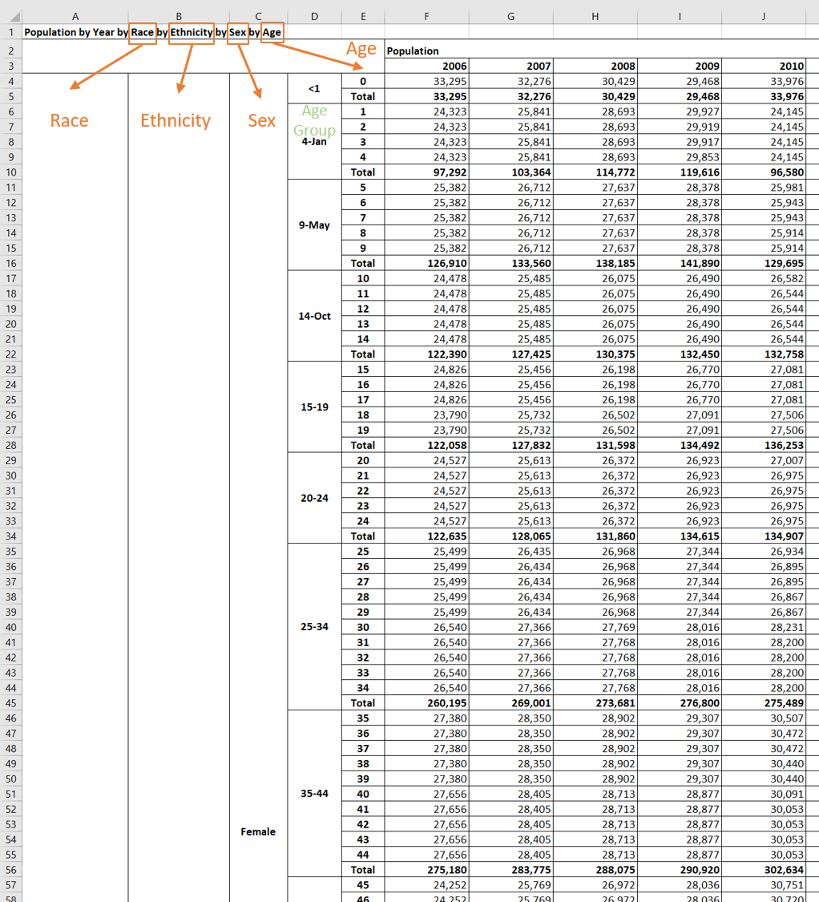
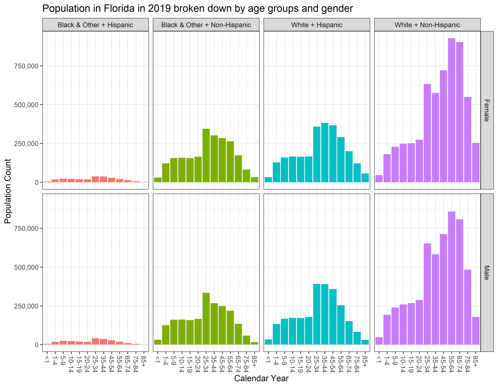
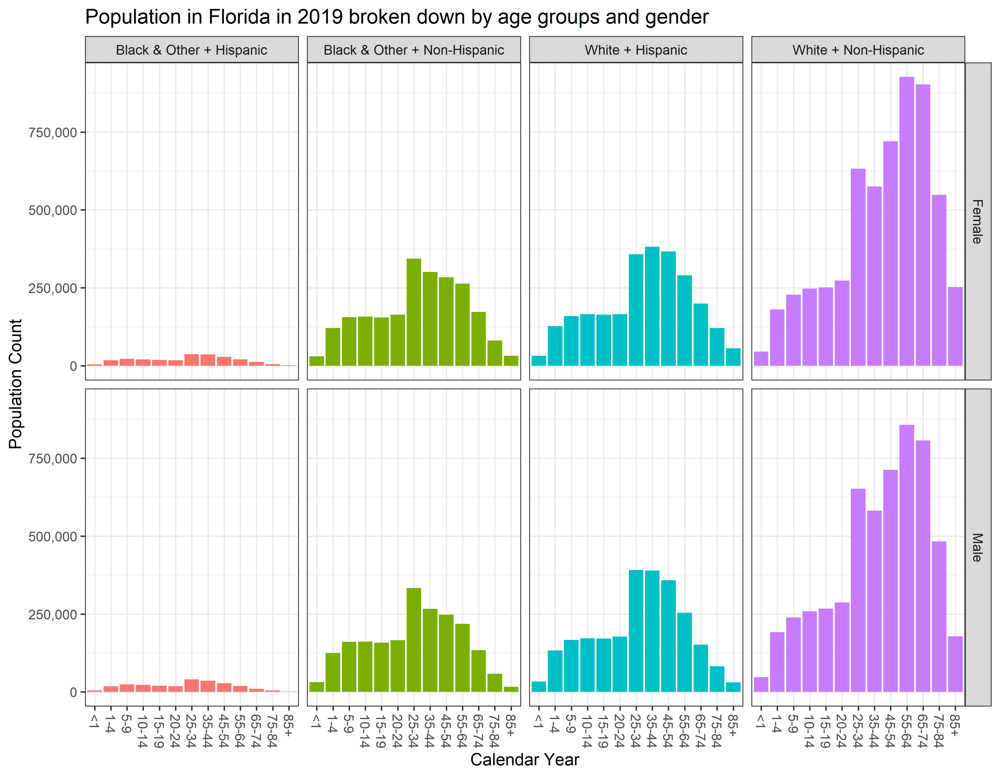

Data Origin
The initial extract of the data was obtained from www.flhealthcharts.com a reporting tool for population counts estimated by the Florida Department of Health.

View of the extracted data
The blogpost shows how these data are cleaned, prepared for analyses and explored.
 
